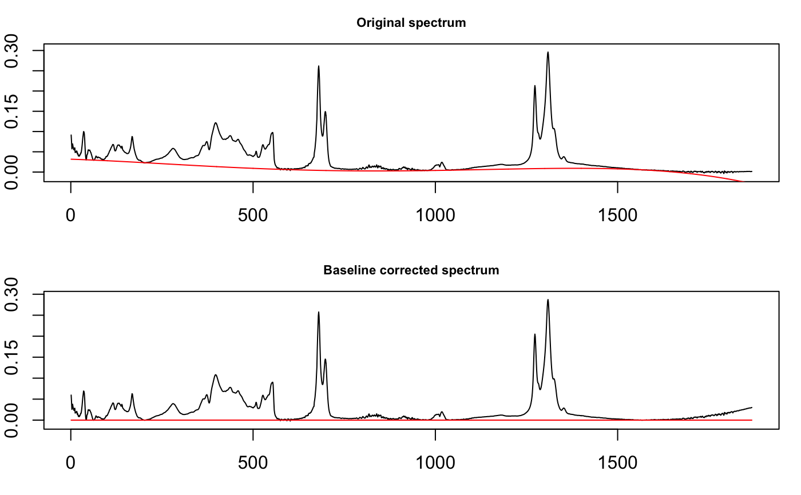

This function mostly wraps functions in package baseline which carries out a variety of baseline correction routines. A simple linear correction method is also available.
baselineSpectra(spectra, int = TRUE, retC = FALSE, ...)
| spectra | An object of S3 class |
|---|---|
| int | Logical; if |
| retC | Logical: shall the baseline-corrected spectra be returned in the
|
| … | Other arguments passed downstream. The relevant ones can be
found in |
If int = TRUE, an interactive plot is created. If int
= FALSE and retC = FALSE, an object of class baseline is
returned (see baseline-class). If int =
FALSE and retC = TRUE, a Spectra object containing the
corrected spectra is returned. In these latter two cases plots are also
drawn.
In plots using methods from the baseline package, the x axis ticks give the
data point index, not the original values from your data. Note that you
cannot zoom the non-interactive display of corrected spectra because the
underlying function hardwires the display. Try the interactive version
instead (int = TRUE), or use plotSpectra on the
corrected data.
In addition to the methods provided by baseline, you can also use
method = "linear". This correction is handled locally, and is very
simple: a line is drawn from the first data point to the last, and this
becomes the new baseline. This is most suitable for cases in which the
baseline rises or falls steadily, as is often seen in chromatograms.
https://github.com/bryanhanson/ChemoSpec
data(SrE.IR) temp <- baselineSpectra(SrE.IR, int = FALSE, method = "modpolyfit")